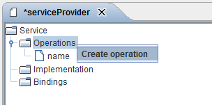
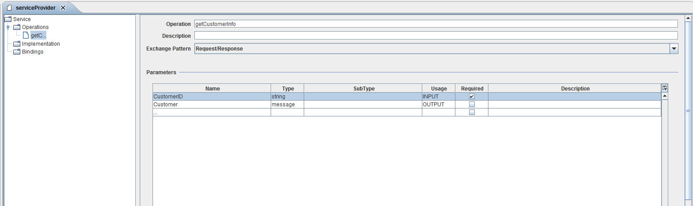

Operations

Topic content
Description
A service operation defines a method or an event which is provided by a service. An operation is precisely defined by name and a namespace. The passing parameters are among other things defined in the Orchestra type system here.
|
Note: Two operations are the same if they are identical in the same and namespace. |
Creation and define operation
To add an operation for your web service provider:
1. Open your service provider from area Scenario Element -> Service Provider.
2. Open the context menu Service -> Operations of the service provider and click on [Create operation]

3. Define your new webservice operation.
4. Specify a name and a description (if applicable) for your webservice operation.
5. Choose the corresponding [Exchange Pattern] and define your parameters for the data inbound and data outbound.

Exchange Pattern:
•Request = Asynchronous request (no response)
•Request/Response = Synchronous request (response expected); the most used case
•Notify = Implementation of a request as callback.
•Solicit/Response = Implementation of a callback.
Note: The usage of the parameters is analogous to the usage of parameters in channels. If you would like to learn more about this, please read Channels.